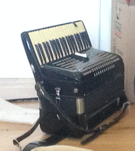
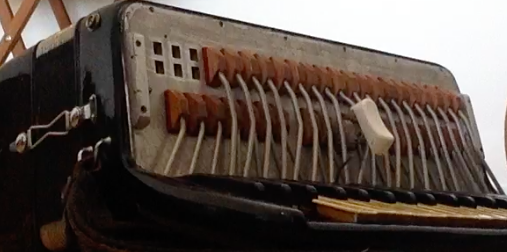
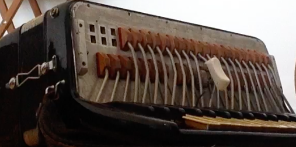

I was interested in trying the Jankó keyboard and I also wanted to learn the accordion, so I decided to combine these efforts and modify an accordion to use the Jankó keyboard. I also had some ideas about improving the standard left hand buttons, the Stradella system of bass notes and chords.
Here's what I started with. The tape on the keyboard is to hold down a C to help identifying notes when examining the left hand bass mechanism.  I figured the left hand modification would be faster, so I did that first. I considered over a dozen ways to alter the stradella system, mostly by removing notes from the existing chords. Each chord button pushes a piston, which has pegs or tabs on the side which catch levers, and each lever turns the rod that opens the valve for one note. It's easy to remove pegs from the pistons to remove notes, but hard to add new notes.
The stradella system has 6 rows on my accordion. Starting from the side closest to the bellows, the rows are: the counterbass note (a major third above the bass), the bass note, the major chord, the minor chord, the dominant seventh chord, and the diminished seventh chord. I decided to remove the 5th from the major and minor chords, leaving just the root and third as sparser two-note chords, and to turn the last two rows into a higher-pitched copy of the bass and counterbass. My goals were to preserve the capabilities of the original stradella system and to allow: easier fingering of other chords such as the major seventh, playing simple melodies on the four single note rows as on a "quint" free bass system, harmonies like power chords and suspensions, and single note drones.
I marked the notes to remove on each of the pistons:
 I tried cutting the pegs with wire cutters or grabbing them with nail clippers,
but the best method I found was to bend the piston near the peg a couple of times
to distort the hole and then easily pull the peg out.
I tried cutting the pegs with wire cutters or grabbing them with nail clippers,
but the best method I found was to bend the piston near the peg a couple of times
to distort the hole and then easily pull the peg out.
 With the left hand done, I took off the keys on the right hand keyboard.

With the left hand done, I took off the keys on the right hand keyboard.

 Each key will be covered with a small stick with the buttons glued on top, so I trimmed the black keys down to the height of the white keys and trimmed the
white keys to the width of the black keys, to allow an even row of sticks extending the whole depth of the keyboard.
Each key will be covered with a small stick with the buttons glued on top, so I trimmed the black keys down to the height of the white keys and trimmed the
white keys to the width of the black keys, to allow an even row of sticks extending the whole depth of the keyboard.
This key is clamped to be cut with a bandsaw at the Artisan's Asylum makerspace.
 I also cut a bunch of buttons, sticks, and spacers to raise the buttons.
I was thinking of leaving the buttons unpainted at this time, which is why I cut them from
this dark wood I found in the scrap bin.
I also cut a bunch of buttons, sticks, and spacers to raise the buttons.
I was thinking of leaving the buttons unpainted at this time, which is why I cut them from
this dark wood I found in the scrap bin.
 Gluing on the sticks.
Gluing on the sticks.
 All glued. Note how the black keys are now extended to be as long as the white keys.
All glued. Note how the black keys are now extended to be as long as the white keys.
 Here they are back on the keyboard. They didn't come out so even! I think the biggest
problem was that I cut the black keys by eye, although the keys were a bit uneven to start with.
Here they are back on the keyboard. They didn't come out so even! I think the biggest
problem was that I cut the black keys by eye, although the keys were a bit uneven to start with.
 The first button is glued in place. Just 101 more to go!
The first button is glued in place. Just 101 more to go!
 All the buttons in place, after about 20 or 30 hours of work. The uneven heights
of the sticks made it harder, since I had to fit together several spacers of different widths
to get the buttons to be the right hight. I should have made a jig to cut the
black keys, and perhaps I could have made the sticks and spacers in
one piece on the laser cutter.
All the buttons in place, after about 20 or 30 hours of work. The uneven heights
of the sticks made it harder, since I had to fit together several spacers of different widths
to get the buttons to be the right hight. I should have made a jig to cut the
black keys, and perhaps I could have made the sticks and spacers in
one piece on the laser cutter.
I didn't make enough buttons the first time! The second batch didn't match the color, but that's okay since the grey-brown buttons were kind of dull-looking anyway so I had already decided to paint them.
 I painted the spacers and sticks black to blend in with the case of the accordion.
I painted the spacers and sticks black to blend in with the case of the accordion.
 I tried to put them back in the keyboard. Unfortunately, about half
of them had a lot of friction or collided with neighboring keys, and one didn't fit at all. I'm not sure why these problems happened,
since they worked fine before I took them out to paint.
I tried to put them back in the keyboard. Unfortunately, about half
of them had a lot of friction or collided with neighboring keys, and one didn't fit at all. I'm not sure why these problems happened,
since they worked fine before I took them out to paint.
 So I took the keys out again and worked on the problematic ones, sanding, filing, or just snapping off
the buttons and regluing them in the right spot.
So I took the keys out again and worked on the problematic ones, sanding, filing, or just snapping off
the buttons and regluing them in the right spot.
 After playing my new accordion for a few weeks, I was dissatisfied with my experimental left hand system.
The easiest way to play a C dominant chord was be to play the C major and the G minor buttons, but this
produced a four-note chord which was noticeably fuller-sounding than the two-note major chord. The free bass
did not really work: there's a big difference in sound between single chord notes and the bass notes, and
the unintentional octave jumps on the higher pair of rows were very apparent, making complicated melodies
unappealing. I decided to put the flat 7 notes back into the dominant chord buttons. The resulting tritones
are then usable as a two-note dominant chord, and also work as a diminished chord, as on the french stradella.
After playing my new accordion for a few weeks, I was dissatisfied with my experimental left hand system.
The easiest way to play a C dominant chord was be to play the C major and the G minor buttons, but this
produced a four-note chord which was noticeably fuller-sounding than the two-note major chord. The free bass
did not really work: there's a big difference in sound between single chord notes and the bass notes, and
the unintentional octave jumps on the higher pair of rows were very apparent, making complicated melodies
unappealing. I decided to put the flat 7 notes back into the dominant chord buttons. The resulting tritones
are then usable as a two-note dominant chord, and also work as a diminished chord, as on the french stradella.
The one remaining row of single notes, however, is useful for suspensions, simple lines, and mimicking arpeggios by alternating them with a chord.
On the right hand side, the resistance of the keys is higher on the higher rows, which I could have reduced a bit by making all the keys sit closer to the bed of the keyboard. The black keys are a bit lighter since their fulcrums are further back, toward the bellows. It plays fine though!
 There's still a bit more to do: a sticky key to fix and something to prevent the keys from getting damaged when it's
in the case. I'm also thinking of adding a baffle to imitate the sound of a tone chamber.
There's still a bit more to do: a sticky key to fix and something to prevent the keys from getting damaged when it's
in the case. I'm also thinking of adding a baffle to imitate the sound of a tone chamber.